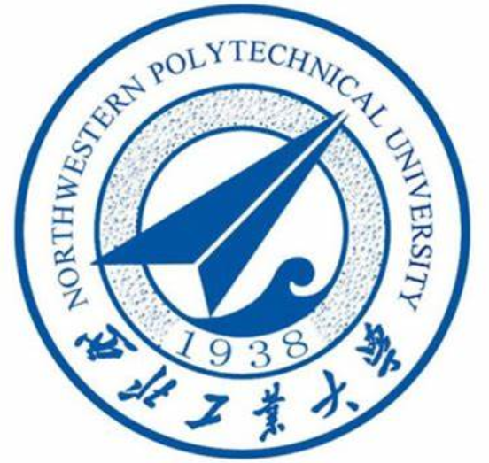
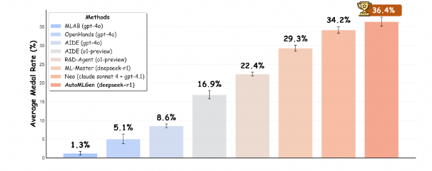

|
 Dengyang Jiang
Dengyang Jiang
Hi, there! I'm Dengyang Jiang, currently a Ph.D. candidate at The Hong Kong University of Science and Technology, supervised by Prof. Harry Yang.
My research interests encompass deep learning and computer vision. I am delighted to communicate and collaborate with anyone interested in this field.
Feel free to contact me via Email or Xiaohongshu(RedNote).
|
|
Education Experience

School of Automation, Northwestern Polytechnical University, 2022-2026
B.S.E., supervised by Prof. Lei Zhang, in the research team leaded by Prof. Yanning Zhang.
|
Work Experience
Tongyi Lab, Alibaba Group, 2025.10-present
Research Intern, mentored by Dr. Peng Gao,
also work with Prof. Steven Hoi.
Shanghai Artificial Intelligence Laboratory, 2025.07-2025.10
Research Intern, mentored by Dr. Bo Zhang,
also work with Dr. Peng Gao.
SGIT AI Lab, State Grid Corporation of China, 2024.06-2025.07
Research Intern, mentored by Prof. Mengmeng Wang,
also work with Dr. Jingdong Wang.
|
Research Interests
-
Visual Generation with Diffusion Model: pre-training acceleration, reinforce learning post-training, step distillation, image editing, synthetic dataset.
-
Visual Representation and Perception: self-supervised learning, segmentation, affordance grounding, detection.
-
Unified Modling: unified multimodal understanding and generation model, vision generalist, the intersection and synergy of representation learning and generative modeling.
|
Projects

|
Z-Image: An Efficient Image Generation Foundation Model with Single-Stream Diffusion Transformer
Z-Image Team, Alibaba Group
Z-Image, an efficient 6-billion-parameter foundation model for image generation. Through systematic optimization, it proves that top-tier performance is achievable without relying on enormous model sizes, delivering strong results in photorealistic generation and bilingual text rendering that are comparable to leading commercial models.
|

|
Lumina-DiMOO: An Omni Diffusion Large Language Model for Multi-Modal Generation and Understanding
Alpha VLLM Team, Shanghai AI Laboratory
An open-source foundational model with fully discrete diffusion modeling for seamless multi-modal generation and understanding.
|
|
Publications/Preprints (* Co-First Author) (Google Scholar)

|
Distribution Matching Distillation Meets Reinforcement Learning
Dengyang Jiang, Dongyang Liu, Zanyi Wang, Qilong Wu, Liuzhuozheng Li,
Hengzhuang Li, Xin Jin, David Liu, Zhen Li, Bo Zhang, Mengmeng Wang, Steven Hoi, Peng Gao, Harry Yang
Preprint, 2025
Showing that DMD and RL can be trained simultaneously, with RL enabling the student model to surpass the teacher and DMD loss regularizing RL to prevent reward hacking.
|

|
Unleashing the Intrinsic Visual Representation Capability of Multimodal Large Language Models
Hengzhuang Li, Xinsong Zhang, Qiming Peng, Bin Luo, Han Hu,
Dengyang Jiang, Han Jia Ye, Teng Zhang, Hai Jin
Preprint, 2025
A novel training framework that facilitates MLLMs in learning more discriminative visual representations via masked image modeling in the joint latent semantic space of LLM.
|

|
EVTAR: End-to-End Try on with Additional Unpaired Visual Reference
Liuzhuozheng Li, Yue Gong, Shanyuan Liu, Bo Cheng, Yuhang Ma, Liebucha Wu, Dengyang Jiang, Zanyi Wang, Dawei Leng, Yuhui Yin
Preprint, 2025
An End-to-End Virtual Try-on model that directly fits the target garment onto the person image.
|

|
No Other Representation Component Is Needed: Diffusion Transformers Can Provide Representation Guidance by Themselves
Dengyang Jiang,
Mengmeng Wang, Liuzhuozheng Li, Lei Zhang, Haoyu Wang, Wei Wei, Guang Dai, Yanning Zhang, Jingdong Wang
Preprint, 2025
Self-representation alignment for enhancing representation learning and generation performance of diffusion transformers.
|
|

|
AutoMLGen: Navigating Fine-Grained Optimization for Coding Agents
Shangheng Du, Xiangchao Yan, Dengyang Jiang*, Jiakang Yuan, Yusong Hu, Xin Li, Liang He, Bo Zhang, Lei Bai
Preprint, 2025
The LLM-based agent which achieving leading machine learning engineering capability by combining a curated ML knowledge
base with proposed Monte Carlo Graph Search.
|

|
Deforming Videos to Masks: Flow Matching for Referring Video Segmentation
Zanyi Wang, Dengyang Jiang*, Liuzhuozheng Li, Sizhe Dang, Chengzu Li, Harry Yang, Guang Dai, Mengmeng Wang, Jingdong Wang
Preprint, 2025
Reformulating RVOS as a continuous, text-conditioned flow from video
to mask and achieving leading performance.
|
|
|
AffordanceSAM: Segment Anything Once More in Affordance Grounding
Dengyang Jiang,
Zanyi Wang, Hengzhuang Li, Sizhe Dang, Teli Ma, Wei Wei, Guang Dai, Lei Zhang, Mengmeng Wang
Preprint, 2025
Transferring SAM to affordance grounding task and showing robust performance for both seen and unseen actions.
|

|
Low-Biased General Annotated Dataset Generation
Dengyang Jiang*,
Haoyu Wang,
Lei Zhang,
Wei Wei,
Guang Dai,
Mengmeng Wang,
Jingdong Wang,
Yanning Zhang
CVPR, 2025
A low-biased general annotated dataset (e.g, ImageNet) generation framework helps to obtain more generalized visual backbones.
|
|
|
{kind=link}